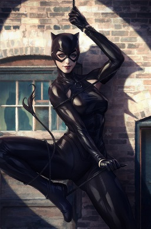

Catwoman (Selina Kyle) is a fictional character created by Bill Finger and Bob Kane who appears in American comic books published by DC Comics, commonly in association with Batman. Debuting as "the Cat" in Batman #1 (spring 1940), she is one of the Dark Knight's most enduring enemies and belongs to the collective of adversaries that make up his rogues' gallery. However, the character has also been depicted as an anti-heroine and became Batman's best known love interest, with many stories depicting their complex love-hate relationship.[3]
Catwoman is a Gotham City burglar who typically wears a tight, one-piece outfit and uses a bullwhip for a weapon. She was originally characterized as a supervillain and adversary of Batman, but she has been featured in a series since the 1990s which portrays her as an antiheroine, often doing the wrong things for the right reasons. The character thrived since her earliest appearances, but she took an extended hiatus from September 1954 to November 1966 due to the developing Comics Code Authority in 1954. These issues involved the rules regarding the development and portrayal of female characters that were in violation of the Comics Code, a code which is no longer in use. In the comics, Holly Robinson and Eiko Hasigawa have both adopted the Catwoman identity, apart from Selina Kyle.[4][5]
Catwoman has been featured in many media adaptations related to Batman. Actresses Julie Newmar, Lee Meriwether, and Eartha Kitt introduced her to a large audience in the 1960s Batman television series and the 1966 Batman film. Michelle Pfeiffer portrayed the character in 1992's Batman Returns. Halle Berry starred in 2004's Catwoman; this, however, was a critical and commercial flop and bears little similarity to the Batman character. Anne Hathaway portrayed Selina Kyle in the 2012 film The Dark Knight Rises. A young version of Kyle was played by Camren Bicondova on the 2014 television series Gotham although Lili Simmons portrayed an older Kyle in the series finale. Zoë Kravitz will portray the character in the 2022 film The Batman after previously voicing her in The Lego Batman Movie.